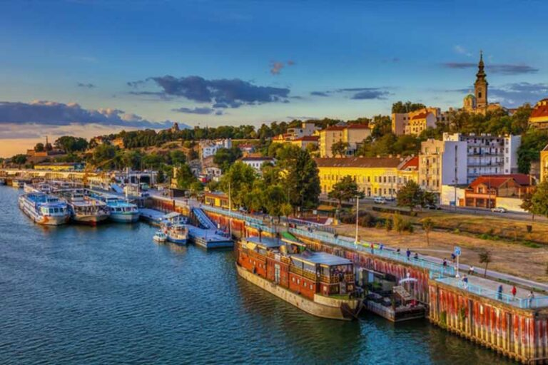
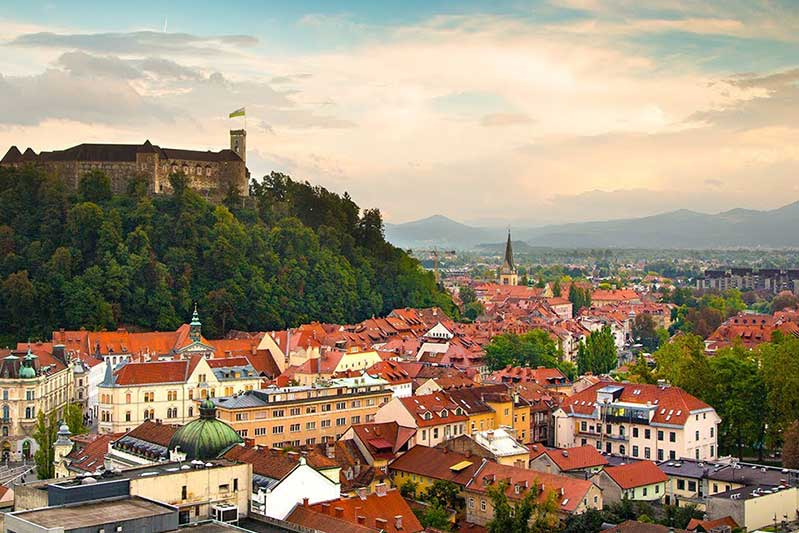
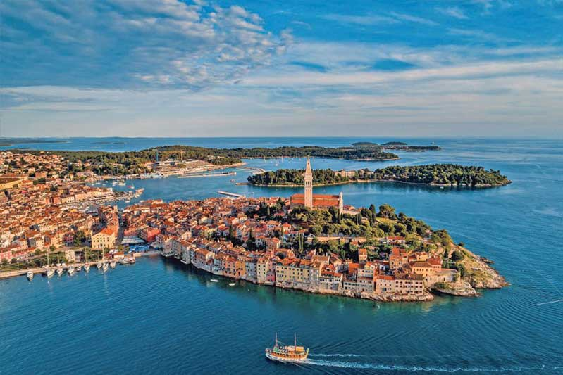
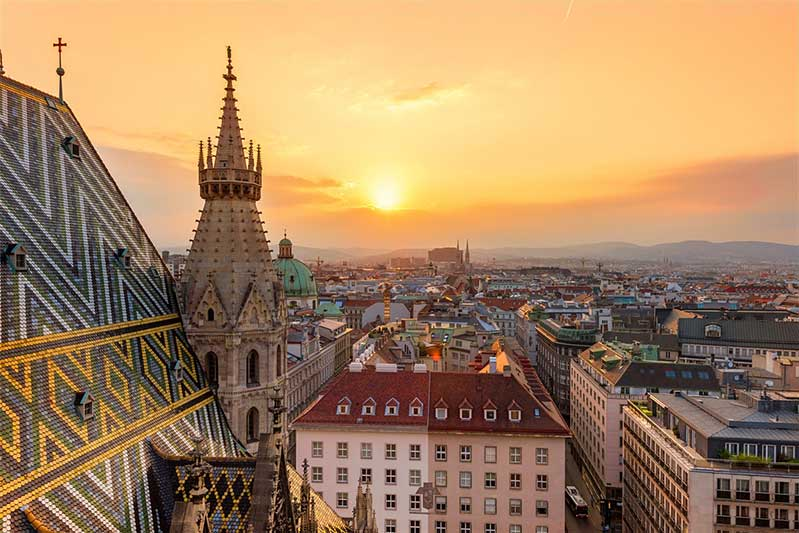
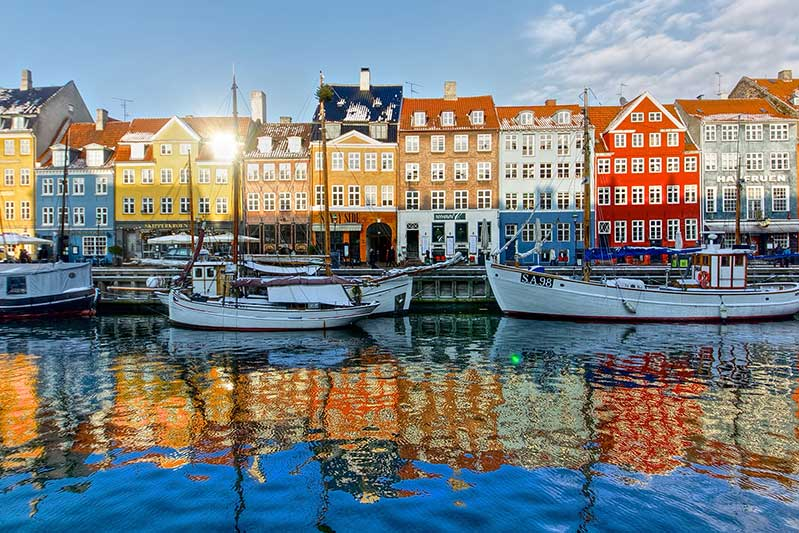
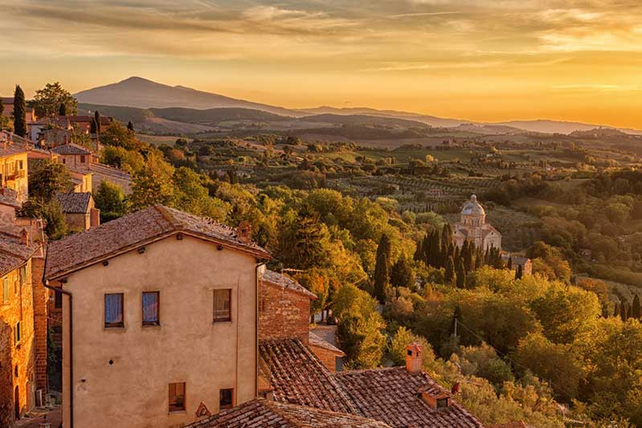

Découvrez nos coups de cœur à l'étranger.
Chaque grande ville a ses propres festivals de tango, milongas et marathons de tango. En conséquence, de nombreux tangueros combinent un city trip avec le tango!
www.tangopolix.com
Toutes les informations sur les festivals de tango dans le monde entier.
www.tangomarathons.com
Un calendrier complet de tous les marathons de tango internationaux.
Nos festivals de tango préférés
Belgrado tango encuentro
Bien que ce soit un grand festival et marathon, il a une atmosphère chaleureuse. De plus, il est hébergé dans une ville avec l'une des communautés de tango les plus dynamiques du monde.

Ljubljana tango festival
Ce festival accueillant dans la capitale de la Slovénie, accueille une variété de danseurs de toute l'Europe. De plus, ils invitent de grands maestros qui donnent de superbes shows!

Mediterranean Summer tango festival
C'est définitivement la fête de tango la plus chaude à laquelle nous ayons jamais assisté. Il a lieu dans la magnifique ville de Poreč en Croatie. Outre les meilleurs professeurs de danse du monde, il y a des ateliers quotidiens, des événements spéciaux et d'innombrables heures de milonga.

Tango Amadeus
Comme son nom l'indique, Vienne est la ville où Tango Amadeus a eu lieu. Outre les lieux à couper le souffle et les maestros impressionnants, des centaines de danseurs internationaux étaient présents. De plus, nous avons eu la chance de faire partie de l'équipe lors de l'édition 2014.

Tango Alchemie
Ce festival de tango à Prague – la « Ville d'Or » – est connu pour ses soirées de gala sur le thème des couleurs, sans oublier les salles étonnantes où ils ont eu lieu!
Outre la musique live, des professeurs et des interprètes incroyables, il y avait également un marathon intime et des soirées « après-gala » épiques. Nous avons adoré cet événement à chaque fois.
Nos marathons de tango préférés
L'équipe BE-TANGO profite de nombreux marathons de tango dans le monde entier. À titre d'illustration, nous vous donnons un bref aperçu de ceux que nous avons assistés ou assistons toujours.
Prague Tango Marathon
PTM est l'un de nos marathons préférés! Depuis 2013, les meilleurs danseurs du monde entier se réunissent ici en février. De plus, cet événement a une bonne ambiance, sert une cuisine délicieuse et accueille des gens incroyables.

Wonderful Copenhagen Tango Marathon
Le Wonderful Copenhagen Tango Marathon a été l'un de nos premiers marathons. Nous avons des mémoires très chères de danser à cet événement. Et certaines des personnes que nous y avons rencontrées sont devenues des amis pour la vie.

Palace Cita
Palace Cita est la nouvelle édition printanière de La Cita. Il rassemble 120 danseurs et 6 Dj's internationaux dans une salle de bal historique art déco près de la Grand-Place de Bruxelles.

La ToSCA
La ToSCA a été organisée pour la première fois en 2009. Elle a été créée pour rassembler des danseurs incroyables du monde entier en Toscane, en Italie. Incontestablement, c'est l'un des plus grands marathons de tango que nous connaissons.

Milan Tango Marathon
Ce marathon de tango se déroule à Milan. Nous aimons beaucoup celui-ci à cause des danseurs et du lieu lumineux. De plus, cet événement est proche de la Fondazione Prada. Ainsi, vous pouvez combiner à la fois votre passion pour la danse et l'art.
La Cita de los Amigos
En bref: La Cita. Cette réunion de tango a deux éditions. La première, l'édition d'hiver, se tient à Bruxelles aux « Brigittines ». Ce lieu est un « Centre d'Art Contemporain du Mouvement et de la Voix de la Ville de Bruxelles ». Et la seconde, l'édition estivale, est organisée à Spa, à proximité du circuit de Francorchamps.